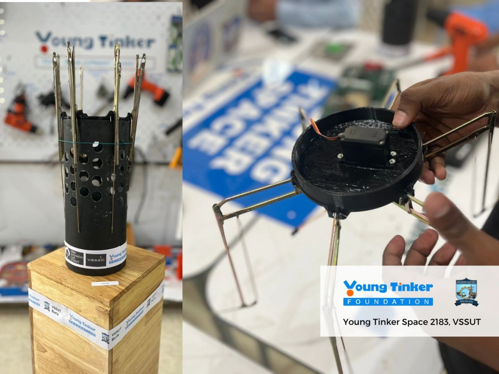
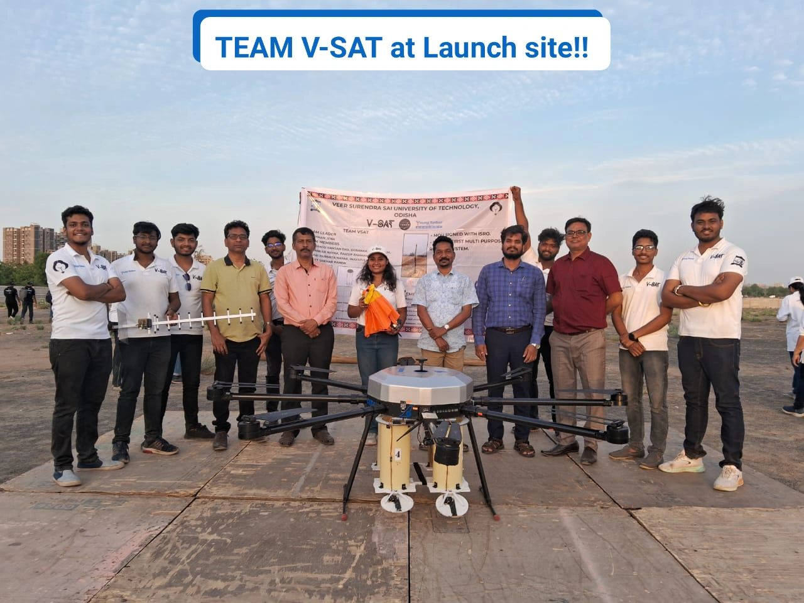

CANSAT India Competition 2024
To be Added
To be added!
First ever student led rocket that I worked on in the year 2022 guided by my seniors and professors. Named "Vanadium" because of it's atomic number 23 representing the passing-out batch of 2023, who were leading the project at the time. I was a very new face, in the team at that time and had the opportunity to work on Avionics, flight computers and telemetry.
This was the 2nd rocket that i had worked on, in the follwowing year 2023 named "Random" completely out of fun, cause I remember someone shared the moon knight meme "Random BullSh*t Go!!" and it kind of stuck with the team at the time ;) I learnt a lot during that phase, again diving deeper into the field of avionics and developing active datalogging system for the rocket.
Explanation here...
